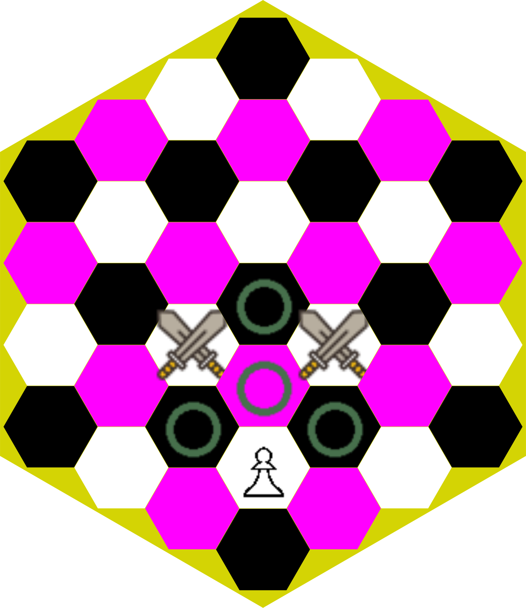

The rules are very similar to those of orthodox chess, adapting the movements to the hexagonal board
(an hextilled chequerboard).
It is also true that there are some differences and new pieces, but this summary briefly synthesizes
the movements on the hexagonal board, the new elements, and other specific differences.
Hexagonal chess
was invented by Władysław Gliński in 1936, although it uses a smaller board and the rules are somewhat different
from those of C'escacs. It was very popular in the 1970s and 1980s in the UK and Poland.
Initial setup
The board forms a regular hexagon with eight hexes on each side, and has three different colours:
white, black and coloured, with the central hex coloured.
The white king and queen take positions in white hexes, and the black king and queen take positions in
black hexes. The kings are positioned opposite each other, on the G column:
the white king on his right, and the black king on his left.
An additional point is awarded when the player is in possession of all three bishops.
In total, at the start of the game, each player has 104 points:
51 from major pieces, 16 from medium pieces, 18 from minor pieces and 19 from the troop.
First impressions
It is a large board with 169 hexes. They come in three different colours, and three bishops are required.
The power of the bishop decreases markedly compared to orthodox chess.
It incorporates the Wyvern (Dragon),
which combines the moves of the Rook and Knight,
and two Pegasus,
which combine the moves of the Bishop and Knight.
It increases the mobility of the pawns, but, even so, their power decreases compared to orthodox chess.
The loss of pawn power is due to the inefficiency of pawn structures in hexagonal chess.
The Elephant piece is incorporated to support the pawn structures.
Initially the pieces are protected, with the exception of the two rooks and the two flank pawns.
A line which exits one hex and enters another by crossing a common border. Orthogonal moves are never
colourbound, as adjacent hexes are of different colour.
Each hex belongs to three different files:
A lengthwise file (referred to as column) and two oblique files.
There are six different orthogonal directions, two on each file.
The orthogonal directions are the directions of the rook moves.
A line which exits one hex and enters another by following the line which connects their nearest corners.
All the hexes on the same line are the same color, so, diagonal moves are always colourbound,
but unlike the square board, the vertices of the hexes of a line do not touch.
This move is not incumbered by pieces lying to the right or the left of the thin line of travel.
Pieces crowding the line are simply passed over.
Each hexe belongs to three diferent lines, each one crossing in a stright line the hex at two of its
corners: two oblique lines and one transversal line (referred to as cross-line).
There are six different directions, two on each line.
Diagonal directions are the directions of the bishop moves;
there are three different colors, so, there are three bishops, one for each color.
Knight jump is the combination of one diagonal hex move and one orthogonal hex move;
each diagonal direction allows two orthogonal diferent final positions; there are a total of twelve
legal moves.
A knight jump can't be prevented positioning a piece in the path of the knight; it is said that
knight jumps.
The color of the destination hex always is different from color of the hex where the move is
originated.
The intermediate hexes, which must be empty to move, are shown.
C'escacs ride move is a doble knight jump (only twice), without capture.
The second jump must be done just the same way as the first one:
same diagonal direction and same orthogonal direction. So, it is defined by the initial
jump; there is only one possible ride for each knight move.
The destination hex must be free, as it this move doesn't allow capturing opponent pieces.
The intermediate hex chaining both jumps must also be free.
The color of the destination hex always is different from color of the hex where the move is
originated.
Two equal knight jumps are chained;
There are twelve possible ride moves, one for each simple knight move.
The intermediate hex, as for the simple jump move, must be free.
He cannot capture pieces when moving by riding; the final hex has to be empty.
There are twenty four total possible moves, but only the twelve simple knight moves allow a capture.
The color of the destination hex always changes with respect to the color of the source hex,
both in single movements and in double movements while riding.
The winged horse can move diagonally, along the lines, or make a knight jump.
He can't ride, as the knight ride.
He combines the movements of the bishop and the knight (without the knight ride).
In hexagonal chess its power is less than a rook, and it is considered a median piece,
superior to the minor pieces, but without reaching the power of the major pieces.
In some languages, Elephant is the name given to the Bishop;
in these languages Halberdier is used as an alternative name.
The movement of elephants is as in eastern chess (Sittuyin,
ASEAN-Chess...):
in diagonal directions forward or backward,
or advancing one or two hexes; a total of six different hexes.
He cannot move diagonally to the sides, and orthogonally only forward. In all there are six
hexes; the movements of the elephant draw the four legs and the trunk.
It is a very slow piece, which allows the construction of consistent structures of pawns,
and its power can be said to be considerably less than that of a bishop,
but it is true that it is mainly due to its slowness and little maneuverability; its
function is to support pawn structures.
The pawn's moves are different if it captures or makes a move to an empty hex;
In addition, there are specific movements for some situations.

Pawn moves
Moves without capture
The pawn may move forward one or two hexes; double step is allowed anywhere.
The pawn may also move one hex orthogonally oblique,
to either of the two adjacent oblique forward hexes by 60º.
In total it has a maximum of four non-capture moves,
not counting the possible additional initial move.
Capture moves
To capture the pawn moves diagonally towards either of the
two diagonally forward hexes, following the two lines at 30º,
that is, in the two front hexes of the same color as the hex it is in.
Special moves
Initial move
In the initial positions, the pawns can make a triple forward movement
along the column, with the exception of the central column
(on the 'F' column) and both columns on the flanks
(the 'A' column and the 'L' column).
A pawn may have been moved, but remain in one of these
initial eight hexes.
In this case, it will keep the ability to do the triple move.
That is to say: for each player there are eight positions
from which a pawn can make a triple move,
and three pawns that can never make a triple move.
Special moves
Promotion
When a pawn reaches one of the fifteen hexcaques on the opponent's side, it will
necessarily promote, but the piece he promotes must be a
regainable
piece previously captured.
Regainable
pieces are: Queen, Wyvern (Dragon), Rooks,
Pegasus, Knights and Bishops, but the colour of the Bishop
must be taken into account, as you cannot have two Bishops of the same colour in play;
only a Bishop of the same colour that has been captured is regainable.
It seems unlikely that there are no captured regainable pieces available to promote a pawn,
but if this were the case, the pawn would remain unpromoted, with its moves limited
by its board position, until either the opponent captures a valid piece for promotion,
or the pawn itself is captured. It is called a pawn
awaiting promotion.
On the turn of the player with a pawn awaiting promotion, immediately
after being captured one of his regainable pieces valid for the promotion,
and if he is not in
check,
the move will necessarily consist of promoting the pawn
that had been awaiting promotion,
without making any other move.
If the player is in
check,
the promotion move must be made on the first move in which the player is
not in check,
without making any other move.
A pawn that makes a double or triple move and passes through a hex
in which it could have been captured by an opponent's pawn, it can also be captured.
The en passant capture must be done immediately after the double or triple movement.
The pawn that makes the capture is positioned in the hex where it would have made a
normal capture,
and the opponent's pawn removed from the game, ignoring the position it has advanced
to (one or two hexes ahead).
When two pawns from opposite sides are facing each other, they do not hold,
because in C'escacs the pawns can move obliquely.
But if a pawn facing another opponent despises the position and makes
a sideways move to dodge it, it can be orthogonally captured
by the opponent's pawn that it scorned and tried to dodge.
When a pawn faced with an opponent's pawn, in the same column
and consecutive hexes, makes an oblique movement avoiding
the opponent's pawn, it can be orthogonally captured.
The capture is made orthogonally, moving to the position where
the opponent's pawn is.
It is the only capture with an orthogonal move that a pawn can make.
A case can arise when a pawn is promoted by making a scornful move avoiding
the opponent's pawn which it was facing. This case can only occur on
the T, A, L, X columns, after making a scornful move respectively from
the A, B, K, L columns. The capture of the scornful pawn also applies in this case,
and the piece to which the pawn has promoted will be captured.
He can move a single hex orthogonally or diagonally; in total twelve possible movements.
You cannot make a move that leaves the king threatened (in check)
When he is threatened (in check) he has to be moved, or you have to move another piece which
avoids the check.
If there is no move to avoid the check, it is checkmate, and the game is lost.
King's leap
Initial move
The five diferent hexes for the King as a result of such leap.
The King can make a leap on its first move, a knight jump:
When the King has not yet been moved.
When the King is not threatened (in check).
A capture can be done on this move.
As it stands on the last rule, it can't be used
to capture a piece which is theatening him (check).
Castling
Initial move
Castling exists in C'escacs, but it is not a fundamental move to develop the strategy,
and it is convenient to play the first games obviating this rule, as detailed below.
You can find the castling rules in the
Castling section of this website.
Not to be confused with the King's leap.
It is also an evasive move, but allows you to incorporate
defense with the Rook.
Play without Castling
Recommendation for first games
It is recommended to play without Castling to get started
in
the game.
Must be agreed at the beginning of the game.
If played without Castling, the King's Leap will
remain, but without allowing the King to capture with this move.
Rules
Draw
A draw,
or a tie between the two contestants, in a tournament represents 1 point for each player,
and occurs:
If the player with the most material
has only the King with one
median piece
(Pegasus), or the
King with two
minor pieces,
or the King with one
minor piece and an
Elephant, or
when the King has only
Elephants,
there are only rare positions in which mate is possible, but with these pieces it is not possible
to move the King into a mate position.
If the position does not allow a glimpse of mate in five moves, it would also be a case of
insufficient material, but it will be treated as a
draw by agreement,
or, if the players do not agree, it will be a
draw for exhaustion
of moves, applying the fifty-move rule (one hundred half-moves), or the seventy-five-move
rule (one hundred and fifty half-moves).
Additional information on endings
A King and a Rook beat a
King and a Bishop or a King and a Knight.
The King and a Queen beat a King and a Pegasus.
The Wyvern (Dragon) and the Queen have approximately the same power.
The Queen is preferable against the Pegasus,
but the Wyvern (Dragon) is much better against the Rook.
The King and a Queendo not beat a King with a Rook.